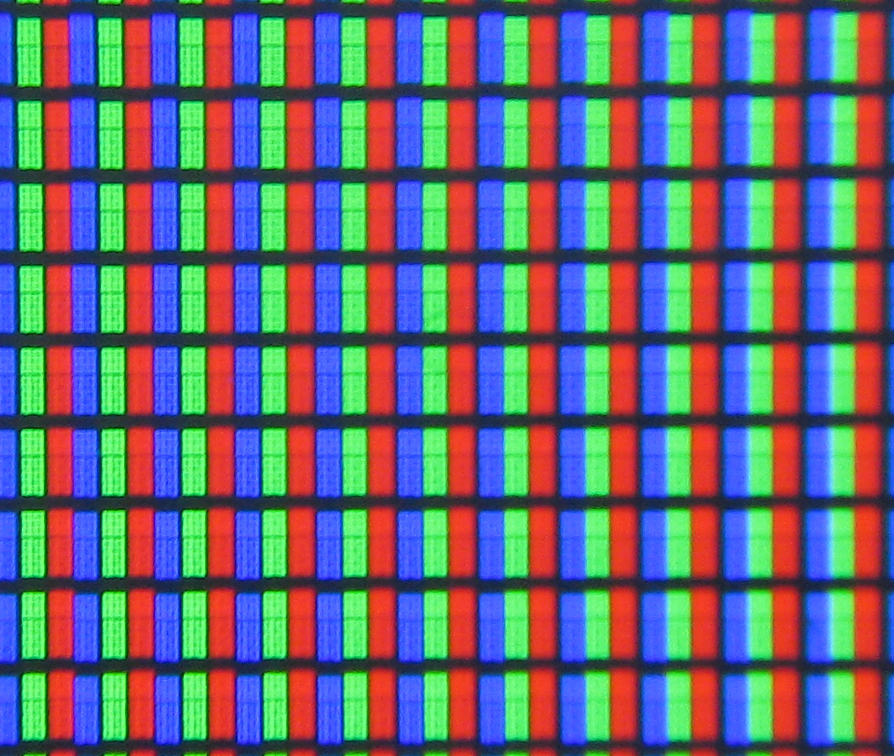
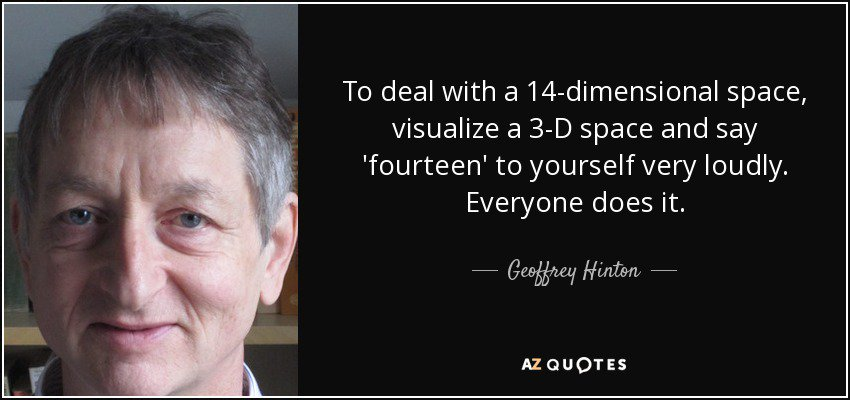
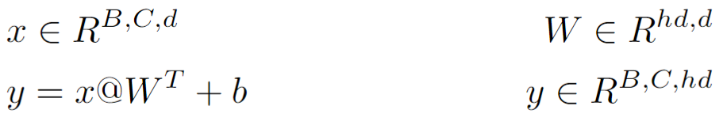
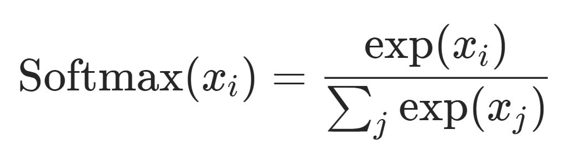

Chapitre 1
Pytorch - Etude sur CIFAR
Introduction - CIFAR10
CIFAR est un dataset facilement accessible via la librairie PyTorch, composé de 60 000 images, dont 50 000 pour l’entraînement et 10 000 pour la validation. Avec une taille de 32x32x3 pixels, CIFAR permet principalement aux chercheurs en vision par ordinateur de tester efficacement et (relativement) rapidement leurs expériences directement à l’aide de ce dataset.
Dans ce premier chapitre, nous allons apprendre à charger le dataset CIFAR10 depuis PyTorch, créer un modèle avec nn.Module et l'entrainer avec notre première boucle d'entrainement.
J'aimerais vous fournir une explication plus détaillée sur le choix de CIFAR10 pour ce cours, avec de belles justifications, mais la vraie raison, c'est probablement que c'est le seul dataset réputé que vous pourrez faire tourner sur vos machines personnelles...
Charger le dataset
À faire - Ex1 : Vous trouverez dans torchvision la documentation pour récupérer plusieurs datasets. Celui qui nous intéresse est... CIFAR ! Ok, vous suivez. L’objectif est de faire les imports nécessaires pour charger torchvision, puis d’instancier deux variables pour le jeu d’entraînement et de test. (Petit indice : c’est la même fonction, regardez bien les paramètres).
PS : pour les plus attentifs, vous remarquerez que la fonction de chargement dans PyTorch demande une transformation. Vous pouvez mettre ce paramètre à "None" pour l’instant, nous y reviendrons plus tard.
Observons un peu ce dataset...
À l’aide de matplotlib, affichez la première image du jeu d’entraînement de CIFAR.
(Désolé, pas de notebook "à trou" ou de code à copier/coller – il faut optimiser ces 4 heures :D)
//TODO
import matplotlib.pyplot as plt
train_set = torchvision.definition // a faire :)
image = train_set... // a faire aussi
plt.imshow(image)
Vous devriez obtenir cette magnifique image de grenouille – necesitas más píxeles? – ou une autre si vous avez choisi un indice différent.
Comprendre le format d'une image
Ce ne devrait plus être un secret pour vous, mais les pixels sont affichés côte à côte sur un écran (au moins pour les écrans LCD, pour les autres technologies, je ne sais pas). Ce n'est pas vraiment une représentation pratique pour manipuler des images.
En Deep Learning, nous utilisons principalement le concept de tenseurs.
Tenseurs. Un tenseur est un concept mathématique qui généralise les notions de scalaire, vecteur et matrice.
Les matrices sont généralement représentées en 2 dimensions (hauteur, largeur, tout va bien jusque-là ?), tandis qu'un tenseur peut être représenté en n dimensions.
Pour représenter une image, nous avons besoin d’au moins 3 dimensions : largeur, hauteur, et profondeur - la profondeur permettant d’encoder les couleurs rouge, verte et bleue.
Voici une image tirée de l'excellent cours learnpytorch.io

En Deep Learning, nous allons encore plus loin en ajoutant une quatrième dimension, appelée le nombre de batches – un ensemble d'images stockées ensemble dans une même variable.
Ne vous inquiétez pas, il est difficile pour tout le monde d'imaginer des formes ou des variables avec plus de trois dimensions.
La taille du batch permet principalement de traiter plusieurs données simultanément avant que le modèle ne mette à jour ses paramètres lors d'une étape d'entraînement. Cela est extrêmement utile pour éviter le surapprentissage (overfitting) – un entraînement parfait mais des performances très mauvaises en test – car le réseau de neurones s'entraîne sur un ensemble d'images variées plutôt que de traiter les images une par une (batch = 1).
À faire - Ex2 : En convertissant explicitement l'image en un tenseur de type PyTorch lors de l'appel à torchvision, affichez à l'aide de matplotlib les 3 canaux de couleurs RGB.
Un peu d'aide...
//torchvision.transforms.ToTensor()
// -> Tensor dimensions : Channels, Height, Width
var tensor = load dataset with transforms=ToTensor()//
// tensor[0,...] = Red, ...
// tensor[1,...] = Green, ...
// tensor[2, ...]= Blue,...
Charger CIFAR10
Pour entraîner le modèle avec le jeu de données que nous avons manipulé précédemment, il est nécessaire d'indiquer à PyTorch comment récupérer les données, sous quel format, et les transformations que nous souhaitons appliquer au jeu de données.
Concernant les transformations, nous avons déjà réalisé cette étape en convertissant une image du format PIL en un tenseur PyTorch.
Cependant, vous pouvez aller plus loin en utilisant la bibliothèque torchvision.transforms pour modifier légèrement l'image, comme changer la couleur, inverser l'image, etc.
C'est ce qu'on appelle l'augmentation des données. Cela permet aux réseaux de neurones de disposer de beaucoup plus d'images pour l'entraînement et améliore la robustesse du modèle en le rendant capable de gérer des images légèrement imparfaites ou modifiées.
Pour charger un dataset dans un objet PyTorch, il suffit d'utiliser l'objet DataLoader avec les paramètres appropriés.
torch.utils.data.DataLoader(...)
À faire - Essayez de charger le jeu de données d'entraînement CIFAR10 dans un objet DataLoader (vous pouvez laisser la transformation transforms.ToTensor()).
Récupérer les images
Lorsque vous faites un appel à train_loader (ou un print si vous n'êtes pas dans un notebook), vous verrez que cela affiche seulement le type de l'objet.
Pour accéder aux valeurs au sein du DataLoader, vous devrez effectuer une itération.
Avec une simple boucle for, vous pouvez accéder directement à tous les éléments de votre objet.
Comment récupérer uniquement la première valeur ?
À faire : Récupérez l'élément 0 de votre objet DataLoader.
Indice : iter() & next()
Vous devriez obtenir un tableau avec 2 tenseurs : l'image en indice 0 et les labels en indice 1.
La taille dépendra du nombre de batches que vous avez spécifié au DataLoader. En effet, cet objet gère le regroupement des images et de leurs labels (y). Si vous avez spécifié shuffle=True, vous obtiendrez un mélange du dataset (whaou) !
Notre premier modèle
Direction - Linear !
Élément fondamental du machine learning, permettant d'appliquer une transformation linéaire aux données d'entrée.
Exercice en semi-autonomie
Premier test - Créer un objet de type nn.Linear()
import torch
import torch.nn as nn
batch = next(iter(#votre_train_loader))
fc = nn.Linear(3*32*32,10)
1. Lancez le fully-connected avec batch[0].
Pourquoi cela ne fonctionne-t-il pas ?
2. Proposez un code pour résoudre le problème - quelqu'un devra passer au tableau :^)
En résumé, une multiplication matricielle nécessite que les dimensions adjacentes soient de la même taille !
Pour nn.Linear(), la dimension adjacente est la dernière dimension de votre tenseur d'entrée.
nn.Module Lorsque nous avons plusieurs objets permettant de créer des perceptrons multicouches ou des couches convolutives, par exemple, il n'est pas pratique de gérer plusieurs variables comme dans le code suivant :
a = nn.Linear(3, 32) #from 32 to 64
b = nn.Linear(32, 24) #from 64 back to 32.
b(a(torch.randn(1,32*32,3)))
Bien que valide, ce code ne permet pas de gérer efficacement des blocs de code plus complexes à grande échelle.
C'est là qu'intervient la classe nn.Module ! Nous pouvons créer une classe dérivée de nn.Module (l'heritage, ça vous dit quelque chose ? Ne vous inquiétez pas, son utilisation est très simple en PyTorch). Voici sa définition :
class My_class(nn.Module):
def __init__(self):
super().__init__()
#definitions / constructors
self.a = nn.Linear(32,64)
self.b = nn.Linear(64,32)
def forward(self, x):
return self.b(self.a(x))
Nous pouvons désormais créer un objet de type My_class pour faire passer une entrée x de dimension finale 3 à travers deux perceptrons multicouches.
À faire :
1. Faites en sorte que la dimension de la couche d'entrée ne soit pas fixée à 32.
2. Faites de même pour la couche "hidden".
3. Ajoutez un troisième nn.Linear pour que l'entrée x renvoie exactement le nombre de classes présentes dans CIFAR10 (spoiler : il y a 10 classes ! :o )
Entrainer sur CIFAR10
Enfin ! Nous savons maintenant comment charger un dataset, le formater pour un objet PyTorch, et effectuer des traitements sur les tenseurs à l'aide d'un objet héritant de
De plus, notre premier modèle retourne un nombre de couches correspondant exactement au nombre de classes du dataset, mais... à quoi ça sert ?
Pour l'instant, pas grand-chose... Notre modèle effectue une transformation classique. Le nombre de neurones utilisé permet simplement d'adapter le nombre de sorties au nombre de classes. Mais c'est là que réside la magie ! Désormais, nous pouvons nous assurer que les tenseurs de n classes par batch produits par le modèle correspondent aux indices de labélisation du dataset.
CIFAR Class
- 0: Airplane
- 1: Automobile
- 2: Bird
- ...
- 9: Truck
Tensor [0.123, 0.289, 3.222, -9.324, 0.11, 0.002, -0.227, 0.9, -3.0, 2.1]
Pour l'instant, notre tenseur retourné contient des valeurs variant entre des nombres négatifs et positifs.
Nous devons transformer ce tenseur en une combinaison de probabilités allant de 0 à 1, dont la somme totale est égale à 1.
Heureusement, il n'est pas nécessaire de coder cela à la main – bien que j'ai failli vous le demander ! – grâce à PyTorch, nous pouvons utiliser l'opération Softmax pour convertir notre ensemble de chiffres en probabilités.
La fonction peut sembler un peu "complexe" au premier abord, mais si nous décomposons le calcul pour la première valeur de notre précédent tenseur [], nous obtenons le calcul suivant :
Nous répétons l'opération pour chaque valeur.
Pourquoi utiliser l'exponentiation ? L'exponentiation nous permet de calculer les probabilités relatives en fonction de la taille des valeurs comparées aux autres.
En PyTorch, il suffit d'appeler la fonction softmax pour effectuer ce calcul sur la dimension correspondant au nombre de classes. Cela permet notamment d'appliquer directement la fonction softmax à notre tenseur tout en conservant la dimension de batch. La définition est la suivante :
import torch.nn.functional as F
probs = F.softmax(my_outputs, dim=1)
#la dimension == n_classes
Maintenant que nous avons les probabilités pour chaque classe d'une image donnée (ici, pour chaque image du batch), nous devons récupérer la probabilité maximale pour chaque image. L'indice de la probabilité maximale sera alors attribué à l'indice correspondante. La fonction torch.max() permet de retourner la probabilité maximale ainsi que l'indice où elle se trouve.
maxProbs, index= torch.max(probs, dim=1)
Parfait ! Pourquoi ne pas vérifier dès maintenant si tout fonctionne ?
À faire : Lancez le réseau de neurones sur la première image du train_set (normalement, cela a déjà été fait dans l'exercice précédent).
1. Récupérez les "labels" de la première image. (L'indice [0] correspond aux images du batch, tandis que l'indice [1] permet d'obtenir les labels correspondants.)
2. Nous voulons obtenir le total de réussites pour l'ensemble du batch ! Écrivez une fonction accuracy pour calculer le total des bonnes réponses.
Si les dimensions correspondent (ce qui devrait être le cas ici, sinon il y a un problème dans votre code !), Python permet une comparaison directe entre les labels et vos prédictions en utilisant l'opérateur ==. Vous pouvez ensuite faire une somme des valeurs 1 pour les bonnes réponses et 0 pour les mauvaises, puis diviser par le nombre total de labels.
Cross-entropy
Revenons un instant sur les probabilités générées par softmax. Nous obtenons un vecteur de réels permettant d'extraire l'indice du label correspondant, ce qui permet à notre réseau de neurones de "répondre" en proposant la classe qu'il estime la plus proche de ce qu'il observe. Malheureusement, cette information seule ne permet pas d'entraîner le réseau de neurones. Pour s'entraîner, un réseau doit, en fonction des probabilités qu'il retourne, s'auto-corriger en fonction de ses erreurs. Il est donc essentiel de lui indiquer à quel point il s'est trompé !
Pour cela, PyTorch propose plusieurs fonctions. Celle qui nous intéresse est la fonction de coût cross-entropy catégorique.
La fonction de cross-entropy multiplie notre vecteur de probabilités par un vecteur encodé en 0 et 1, en fonction de la vérité des labels.
Par exemple, pour la classe 2 – la vérité des labels étant forcément 2, encodée par un 1 à l'indice correspondant :
[0, 0, 1, 0, 0, 0, 0, 0, 0, 0] x [0.123, 0.289, 3.222, -9.324, 0.11, 0.002, -0.227, 0.9, -3.0, 2.1]
La fonction de cross-entropy effectuera une somme globale sur l'intégralité de la dimension batch pour fournir un retour global sur la performance de votre réseau de neurones.
PS : Pour le calcul précédent, on aurait pu simplifier en utilisant -ln(3.222), étant donné que 0 multiplié par n'importe quel autre nombre donne 0 (whaou).
import torch.nn.functional as F
lossFn = F.cross_entropy
loss = lossFn(my_prob_outpus, labels)
tensor(2.35, grad_fn=NllLossBackward)
Descente de gradient
Ce chapitre touche bientôt à sa fin (enfin)... Nous avons déjà couvert une grande partie de PyTorch. Il ne reste plus qu'à assembler les différentes pièces pour que le modèle puisse assimiler correctement toutes ces informations.
La descente de gradient – dont les détails ne seront pas approfondis dans ce cours – permet de calculer la dérivée de chaque poids et biais sous la forme d'un gradient. Bien qu'un dataset de 60 000 images semble considérable pour ajuster chaque poids en fonction de toutes ces images, c'est pour cela que nous utilisons la fonction de coût (cross-entropy) sur l'ensemble des batches. Cela permet, à chaque itération d'entraînement (ou epoch), de réduire le nombre de calculs de dérivées à n_batches (ce qui revient à répéter le calcul 60 000 / n_batches fois durant UNE epoch).
Voyons un exemple avec la descente de gradient stochastique (SGD). Ce code nous indique comment améliorer les paramètres du modèle en utilisant SGD avec un taux d'apprentissage de 0,001.
learningRate = 0.001
opt = torch.optim.SGD(model.parameters(), lr=learningRate)
Entrainement
preds = model(x)
loss = lossFn(preds, y)
#compute gradients
loss.backward()
#update parameters
opt.step()
#reset gradients to 0
opt.zero_grad()
Validation
preds = model(x)
loss = lossFn(preds, y)
#votre fonction accuracy
acc = accuracy(pred, y)
print("loss",loss, "accuracy",acc)
À faire - Super, nous sommes capables de faire un entraînement sur le premier batch du dataset d'entraînement. Cependant, le dataset d'entraînement est bien plus important (au moins 50 000 images). Plutôt que de simplement faire un next(iter()) sur notre DataLoader, nous allons boucler pour effectuer l'intégralité d'une epoch.
1. Écrivez la fonction fit_one_cycle(), qui réalise une itération complète sur tous les batches de votre objet DataLoader, et qui effectue l'entraînement ainsi que la validation.
2. Testez votre modèle sur une epoch (le résultat sera probablement décevant pour l'instant).
3. Créez une boucle d'entraînement qui prend en compte le nombre d'epochs, et qui appelle la fonction fit_one_cycle() pour chaque epoch.
Super ! Nous avons entraîné notre premier réseau de neurones... c'était un travail considérable, et pourtant les résultats sont probablement décevants pour l'instant ! L'objectif de cette démarche est de vous apprendre à manipuler PyTorch et, surtout, à construire des réseaux de neurones efficaces !
La suite est ici ! Chapitre 2 : "Deep Dive" - Architecture de réseaux de neurones avancées